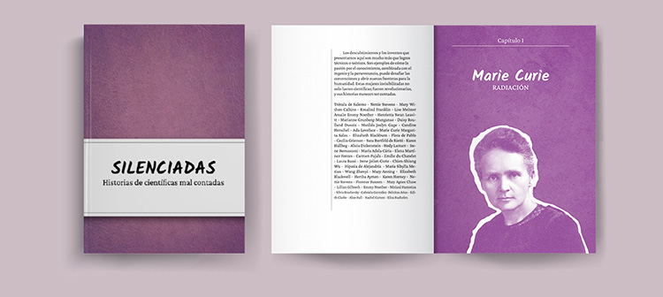

¡Hola! Soy Fili
Te invito a conocer más de mi
Dejenme contarles un poco de mí, apenas salí del secundario entré a la Tecnicatura universitaria en diseño gráfico. Sin saber mucho de la disciplina fui transitando la carrera y poco a poco me enganché. En 2024 terminé y a mediados de 2025 comencé la Licenciatura en diseño que continúo hasta el día de hoy. Durante esta trayectoria participé en proyectos de investigación y desarrollé proyectos de diseño gráfico de manera freelance. Al día de hoy me dedico al diseño editorial y disfruto mucho de trabajar de forma colectiva. Uno de mis referentes es Coco Cerrella, un diseñador gráfico, activista y docente que se especializa en afichismo, diseñando piezas de gran impacto visual y con mensajes muy pregnantes.
